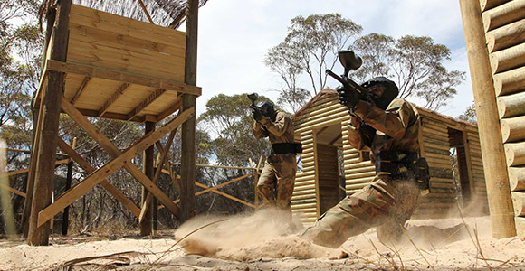
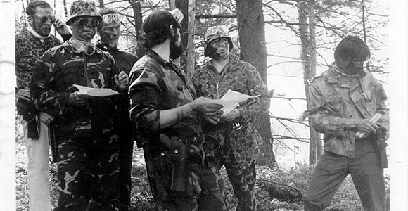
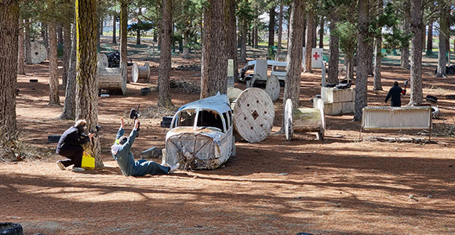

| Начало • Futsal • Speedcubing • Parkour• Teqball • Highdiving • Paintball • Sepak Takraw • Roller Derby • Kiteboarding |
| Paintball | |
|
 |
|  |
|
Правила на играта Играчите трябва да останат в рамките на определените граници на полето. Излизането извън границите води до елиминиране. За да избегнат изстрели от близко разстояние, играчите могат да предложат на опонент шанса да се предаде, ако е на няколко крачки. Противникът трябва незабавно да приеме с вик "Предавам се" или "Аут съм". Играчите винаги трябва да гледат целта си, когато стрелят. Стрелбата без да се види къде ще попадне изстрелът е забранена. Физическият контакт между играчите е строго забранен. Всяко агресивно поведение води до незабавно изгонване от играта. |
 |
| Видеа | |